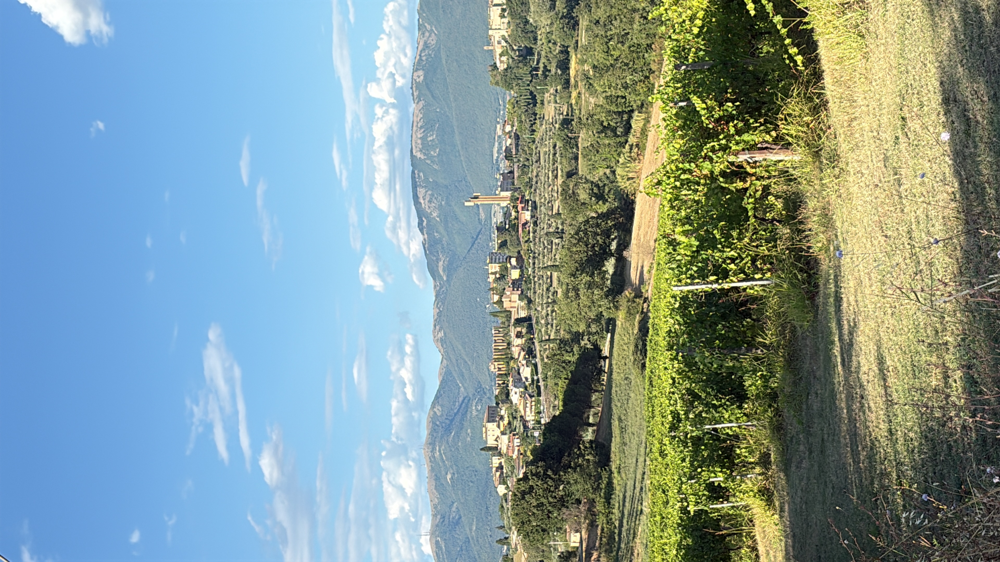
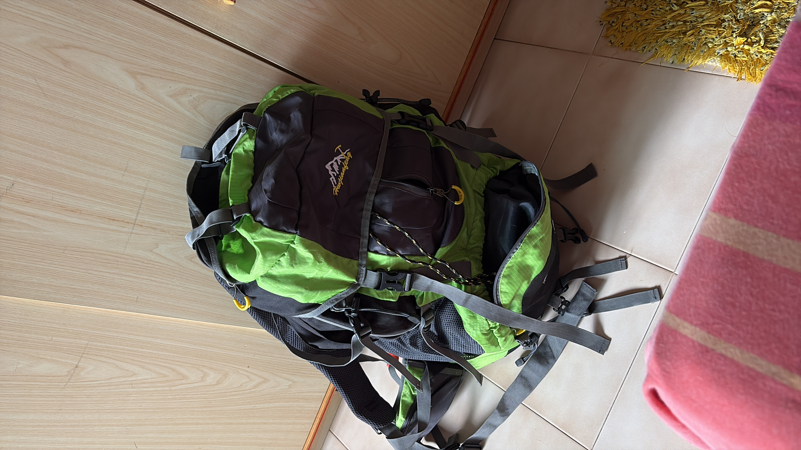
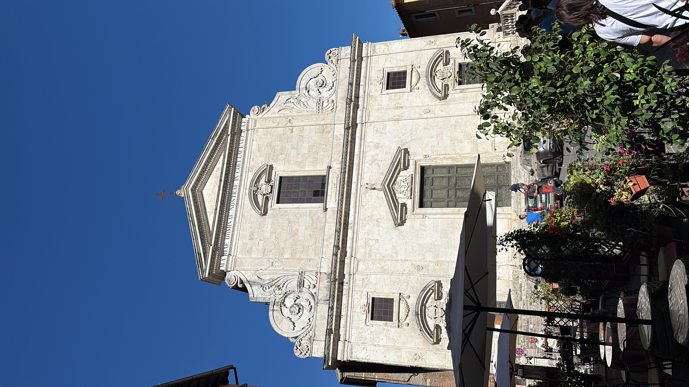

Siamo partiti il 29 luglio dalla Chiesa di Schiavo. Eravamo quasi duecento: giovani, catechisti, sacerdoti, famiglie, animatori dell’Oratorio “Sentinelle del Mattino”, fratelli e sorelle del Cammino Neocatecumenale delle parrocchie di San Sisto, Lacugnano e Sant’Andrea delle Fratte. Zaini in spalla, scarponi ai piedi, cuori aperti.

Schiavo. Un nome che ci ha fatto pensare. Non solo un luogo, ma un simbolo. Schiavo delle passioni, delle paure, delle proprie ragioni. Schiavo che Gesù viene a liberare. Siamo partiti da lì perché, in fondo, ciascuno di noi sapeva di avere qualche catena da lasciare lungo la strada.
Schiavo → Marsciano: i primi passi
I primi passi sono sempre strani. Le gambe si svegliano piano, il respiro si fa ritmo, bum-bum, bum-bum. Pochi chilometri, ma bastano per capire che non sarà una gita. È un cammino. Ci dividiamo in piccole compagnie di dieci persone. Camminiamo, preghiamo, condividiamo. Un momento di silenzio, una parola, un canto, un sorriso. In quelle prime ore, capiamo che il pellegrinaggio non è qualcosa che si “fa”: è qualcosa che ci “accade”.

Marsciano → Todi: la salita che purifica
La tappa successiva è dura. Gli ultimi quattro chilometri verso Todi sembrano non finire mai: pendenza al 65, forse 70%. Il sole che picchia, il sudore, le gambe che tremano. Ma proprio lì, nella fatica, qualcosa cambia. La salita ci “sgrossa”, ci toglie di dosso la polvere interiore, le giustificazioni, le maschere. Passo dopo passo, impariamo a non mollare. Ogni sosta diventa occasione per guardarsi, incoraggiarsi, dire “ci siamo”. Quando arriviamo in cima, stanchi ma felici, Todi ci sembra una promessa mantenuta.
Todi → Collevalenza: la vita quotidiana
La tappa che ci porta a Collevalenza è, sulla carta, più tranquilla. Ma non sempre le cose tranquille sono facili. Camminiamo su strade che si allungano, sotto un sole che non dà tregua. È la tappa della vita quotidiana: quella che sembra semplice, ma ti insegna che non si smette mai di imparare. Chi pensava di essere ormai “allenato” scopre che il cammino ha sempre qualcosa di nuovo da dire. La fatica diventa maestra, il paesaggio compagno, il gruppo una piccola famiglia in movimento.

Collevalenza → San Gemini: la tappa del cuore
Quella verso San Gemini è la tappa più lunga, ma anche la più ricca. Dentro c’è tutto: la stanchezza, la bellezza, il paesaggio, la fraternità. Camminiamo tra colline, ulivi, silenzi che parlano. E quando arriviamo, il paese ci accoglie con calore: la gente ci sorride, le amministrazioni comunali ci fanno sentire a casa. Dormiamo in palestre, sui materassini, spesso per terra. Solo chi stava poco bene ha avuto un letto. Ma nessuno si lamenta: la semplicità ci unisce, la povertà condivisa diventa ricchezza. La notte è un respiro collettivo, un brusio di sacchi a pelo e di sogni.
Il ritmo del pellegrino
Ogni mattina la sveglia suona presto, spesso prima delle cinque. Il fresco del mattino, il rumore dei passi, la luce che cresce piano.Ci mettiamo in cammino. Ogni gruppo scandisce la giornata con la preghiera, un brano di Vangelo, una condivisione. C’è chi parla, chi tace, chi aiuta. Nessuno resta indietro. Il pellegrino non cammina mai da solo. Camminare insieme ci fa scoprire una cosa semplice ma vera: che la fede si impara più con i piedi che con le parole.
Tor Vergata: l’incontro con Papa Leone
Dopo le tappe a piedi, saliamo sui pullman e raggiungiamo Orte, la nostra base per i giorni romani. Qui finalmente ci fermiamo. Poi arriva il momento che aspettavamo. Roma. Tor Vergata. Una distesa di giovani, oltre un milione di volti, bandiere, canti, abbracci. Sotto il sole e nella polvere, viviamo ore di attesa e di comunione. L’incontro con Papa Leone ci riempie il cuore. Le sue parole arrivano dritte, semplici, forti. Durante l’adorazione, 45 minuti di silenzio assoluto. Niente suoni, solo il battito dei cuori, il respiro della folla. Lo Spirito Santo si fa sentire come brezza, come fuoco silenzioso. La Messa del giorno dopo è una festa. E quando nel cielo, all’improvviso, appare un arcobaleno, restiamo in silenzio. Sembra un segno: come se Dio ci dicesse “sono qui”. Lo stesso cielo che, 25 anni fa, aveva abbracciato i giovani con san Giovanni Paolo II, ora torna a colorarsi sopra di noi. È la prima domenica di agosto — il 3 — e nel pomeriggio ci concediamo un momento di riposo alle terme di Orte. Acqua calda, risate, chi si tuffa, chi gioca, chi semplicemente chiude gli occhi e respira. Un pomeriggio di svago e di amicizia, per lasciar scorrere via la polvere del cammino. Ci guardiamo: siamo diversi da quando siamo partiti. Più stanchi, forse. Ma più veri. Lunedì torniamo a Roma per l’incontro vocazionale con gli iniziatori del Cammino Neocatecumenale. C’è tensione, attesa, ascolto. Le parole di Kiko ci arrivano dentro: “Chi è Gesù per te, oggi? Cosa puoi fare per Lui?” Silenzio. Poi, piano, iniziano ad alzarsi i primi ragazzi, le prime ragazze. Alcuni piangono, altri sorridono, altri restano semplicemente in piedi, senza dire nulla. Ma quel “sì” mormorato, detto o solo pensato, pesa come un macigno. Molti di noi sentono che qualcosa si è mosso dentro. Dire “sì” non significa sapere dove si va, ma accettare di andare.Dire “sì” è la prima forma di cammino.


Orte Sotterranea e la Messa finale
Il nostro pellegrinaggio si chiude a Orte, con la visita a Orte Sotterranea: un labirinto di vie antiche, acqua e pietra, che ci ricorda da dove veniamo. Poi la Messa in Cattedrale, piena di canti, volti, lacrime. Non è solo una conclusione, ma un inizio. Ci guardiamo, ci abbracciamo, qualcuno ride, qualcuno resta in silenzio. Sappiamo che qualcosa si è trasformato. Abbiamo lasciato Schiavo per arrivare a Roma, ma la vera strada è quella che ora si apre davanti a noi.
Lo spirito del pellegrino
Abbiamo imparato che camminare non è fuggire, ma incontrare. Che la fatica non è un limite, ma una porta. Che la fede cresce passo dopo passo, nel sudore, nella polvere, nei silenzi. Abbiamo imparato a fidarci, ad aiutarci, ad aspettarci. A ridere anche quando le gambe non rispondono più. A pregare anche quando non ci va. Abbiamo scoperto che Dio non si trova solo nelle chiese, ma anche lungo la strada, in chi ti tende una mano, in chi ti regala un bicchiere d’acqua, in chi ti dice “forza, ci siamo quasi”. Siamo tornati diversi. Forse più consapevoli, forse più semplici. Ma con un desiderio più grande: continuare a camminare. Perché il pellegrinaggio non è finito. È solo cominciato. Il passo continua.